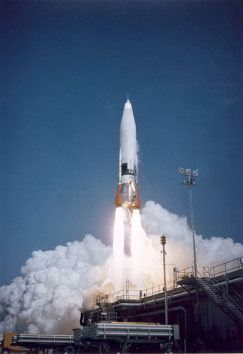

1964-09-15, カリフォルニア：UFO がテスト発射した ICBM を撃墜 → この UFO の正体を合理的に説明


(image generated by Craiyon. https://www.craiyon.com)
履歴
(2022-01-16) 追加 ・ベースとした過去記事は… 1964年9月15日、カリフォルニア：UFO がテスト発射した ICBM を撃墜 （＋追加1） (2017-11-07) (2017-11-07) 追加 ・この件に関するより詳しい動画を追加。 ・ついでに、この件に関する 3つの過去記事を引用。 (2014.04.07) 作成 (2013.02.24) 作成 (2012.10.06) 作成1964年9月15日、カリフォルニア：UFO がテスト発射した ICBM を撃墜
▼展開
はじめに
・UFO が 1945年から2012年7月まで継続的に、空軍基地の核兵器や核ミサイル施設の上空に出現して運用を妨害、干渉した事例がソースには列挙されている。 ・その記事の中から UFO が ICBM を撃墜させた事件が個人的に興味深かったので紹介する。ソースに記載された他の事件も興味深いが記事が長く、翻訳は面倒だし。要旨（デタラメ）
・1964年9月15日、カリフォルニア州にある Vandenberg 空軍基地で行われた ICBM のテスト発射の際に UFO が偶然、撮影された。 ・その記録映像には次のようなシーンが映っていて、極秘扱いにされた。 ・ミサイルの核弾頭部分（ダミーで実際の核弾頭は搭載されていない）がブースター部分から分離した直後、ドームがついた円盤状の物体が核弾頭の周囲を旋回した。 ・その UFO は 4回、電撃のような凄まじい光を核弾頭に直接ぶち当てた。直後、ミサイルは目標の数百マイル手前の位置の太平洋に墜落した。 ・CIA の調査官がこのフィルムを確認している。 ・以上は Robert Jacobs（元空軍少尉 or 中尉）と Florenze Mansmann（退役：少佐）からの情報に基づいている。原文
September 15, 1964: A UFO was inadvertently filmed during an ICBM test flight at Vandenberg AFB, California. The footage, classified Top Secret, showed a domed-disc object circling the dummy nuclear warhead shortly after it had separated from the booster. The UFO then directed four lightning-like bursts of light at warhead, whereupon it tumbled into the Pacific Ocean, hundreds of miles short of its intended target. CIA agents confiscated the film. (Former USAF Lt. Robert Jacobs and retired Maj. Florenze Mansmann)ソース
http://www.theufochronicles.com/2012/10/ufo-activity-at-nuclear-weapons-sites.html" target="_blank" title=" http://www.theufochronicles.com/2012/10/ufo-activity-at-nuclear-weapons-sites.html"> http://www.theufochronicles.com/2012/10/ufo-activity-at-nuclear-weapons-sites.html (2012.10.06)
1964年：飛行中のミサイルが UFO に撃墜されるシーンが撮影されていた
▼展開
・下の動画の 33:57～ ・当時、Robert Jacobs （1st Lt.：大尉）は Vandenberb 空軍基地に所属しており、アトラスミサイル（ICBM ：大陸間弾道ミサイル）の発射状況を地上から望遠鏡で撮影する任務についていた。  ・本来、ミサイルには核弾頭が装備されるが、この時はダミー弾頭が装着されていた。 ・撮影したフィルムを現像し届けた翌日、彼は異様な会議に呼ばれた。灰色のスーツを来た２人の男が同席していた。そこでそのフィルムが上映された。撮影した時には Robert Jacobs は気づいていなかったが、望遠鏡で撮影した映像には UFO がダミー弾頭に接近し、光線を放射して撃墜しているシーンが含まれていた。 ・ミサイルはこの時、160マイル上空を、時速 11000～14000マイルで飛行していた。そこに円盤型の物体が近づいてきて光線を 2度放射、撃墜したシーンが上映された。（再現図） ・彼はこの席で、この映像をどう思うと聞かれ、UFO みたいだ、と答えた。彼はこの件は誰にも話すな、と警告された。 ・この時の UFO に関する資料。
(2013.02.24)
否定派の意見：UFO による核ミサイルの遠隔操作や介入の事実は無かった（途中：その1）
▼展開
… … … ・ついでなので、この機会に核ミサイルに関連した次の事件について補足しておく。 1964年9月15日、カリフォルニア：UFO がテスト発射した ICBM を撃墜 （2012.10.06） という意見に対して UFO が ICBM を撃墜した 1964年の事件は捏造、という関係者（途中：その2） （2013.06.04） という反論がなされている。例によって反論の記事は途中で放置したままだが、反論の趣旨は ・UFO が ICBM をレーザー光線で破壊したとしてもレーザー光線自体は見えない筈。 ・撮像管の特性から、証言にあるような現象は記録されえない筈。 というもの（一年近く前なので記憶がかなり曖昧）。だが、この反論にも次のような欠点がある。 ・レーザー光線だと決めつける根拠に欠ける。UFO が目視可能なビームを放つシーンは複数の事件で報告されている。 ・撮像管の特性云々は推定に推定を重ねた上での議論であり実証されたものではない。 さらに重要なのは、この最初の証人の上司を含め、複数の人物がこの証人の発言を確認する証言をしている（そのシーンの動画を過去記事で紹介した記憶がある）という点。最大の問題は物証がないということ。 (2014.04.07)
（以下、2017-11-07 追加分）はじめに
▼展開
・この件に関するより詳しい動画を見かけたので追加しておく。 ・以下の内容が目新しい。 ・観測に用いた特殊大型カメラで ICBM を追跡する状況の動画。 ・UFO の形状の詳細。 ・ダミー弾頭を攻撃する時に UFO が姿勢を変化させた事。 ・上で言及した「灰色のスーツを来た２人の男」は CIA の人間。抜粋（デタラメ）
… … … …該当箇所
・21:00 から。動画の再生開始時刻を設定済み。 pic動画（48:58）
・The New UFO Documentary the Elite Hoped Would Never Be Aired in Publicコメント
・この証言者は軍を除隊後、大学教授になっていたというので社会的な信頼度は高い。うろ覚えだが、証言時には大学教授の身分だった筈。 (2017-11-07)
前置き
- 先日から「UFO＝脳内バグ共鳴説」という仮説を私は提唱している。この仮説を主張するためには、その反例となりそうな主要な事例について、それが反例とはなっていない（＝仮説が成立している）という説明が必要。 - 反例となりそうな主要な事例のひとつが、タイトルの件。これについて検討する。証言の核心部分
- 以下の証言を検討する。・1964年9月15日、カリフォルニア州にある Vandenberg 空軍基地で行われた ICBM のテスト発射の際に UFO が偶然、撮影された。 ・その記録映像には次のようなシーンが映っていて、極秘扱いにされた。 ・ミサイルの核弾頭部分（ダミーで実際の核弾頭は搭載されていない）がブースター部分から分離した直後、ドームがついた円盤状の物体が核弾頭の周囲を旋回した。 ・その UFO は 4回、電撃のような凄まじい光を核弾頭に直接ぶち当てた。直後、ミサイルは目標の数百マイル手前の位置の太平洋に墜落した。- この証言に嘘がないと仮定した場合、UFO は「UFO＝脳内バグ共鳴」ではありえず、実在する飛行物体と言えるだろうか？この UFO の正体を推測すると…
- 私はこの事件では UFO は登場していないと考える。この ICBM が不良品だったために正常に飛行できずに空中分解、墜落しただけだと。 - UFO に見えたモノの正体は弾頭の下（分割段）に取り付けられた姿勢制御用のノズル部分（*1）が組み立て不良だったために振動等で外れ、パイプやワイヤーなどでかろうじて本体につながったまま、周囲を巡っただけではないか。 - ノズル部分の形状は証言にある「ドームがついた円盤状の物体」に適合している。 - UFO から放射された「電撃のような凄まじい光」は、故障したノズルから吹き出した噴射の光だろう。（*1）
他の根拠
- 第一に、類例が皆無。UFO が ICBM や他のミサイルを撃ち落としたという証言が他に全くない（少なくとも私の記憶にはない）。 - 第二に「UFO が核兵器や核爆発を警告している」とか「核爆発は近隣の恒星系や近隣の並行宇宙に深刻なダメージを与える」という説が UFO 業界には蔓延っている。だが、それが本当ならかつて 2000回以上も実施されてきた核実験を UFO が警告したとか、実力で止めさせた事例が皆無なのは説明がつかない。 - 第三に、 ・(a) UFO が ICBM を攻撃して墜落させた ・(b) ICMB が不良品だったために、空中分解し墜落した というふたつの可能性のどちらがありえそうか。当然、(b) の筈。補足
- 私の上の推測が正しければ、空軍はこれが UFO とは無関係だと百も承知の上（*2）で、・彼はこの席で、この映像をどう思うと聞かれ、UFO みたいだ、と答えた。彼はこの件は誰にも話すな、と警告された。という芝居をした。わざわざ誘導して「UFO みたいだ」という発言を引き出した。その上でしゃべるなと警告した。なぜか？ - 空軍はこれが本物の UFO 事件だと、民間 UFO 研究者に確信させたかった。Roswell 事件を本物だと UFO 研究者に信じさせたかったのと同じ動機にもとづいている。その動機にそって空軍の AFOSI の一員だった Richard Doty が様々な捏造ネタで民間 UFO 研究者を騙してきた。（*2）
- これはテレメトリーのデータを見ればすぐに判明する。 - テレメトリーのデータを見ずとも、ここで私が推測したような事は専門家には自明の筈。空軍の専門家は皆、この件で UFO 業界の反応をニヤニヤしながら眺めていたに違いない。 - 怪訝なのは UFO 懐疑論者や否定論者の誰一人としてこの UFO の正体に気づいた気配が全く無いこと。コメント
- これで、この事件は解決済みだと判断したい。 - この事件を最初に Blog 記事にしてから 10年弱かかったが、ようやくケリがついたと。 (2022-01-16)
初出
1964-09-15, カリフォルニア：UFO がテスト発射した ICBM を撃墜 → この UFO の正体を合理的に説明 (2022-01-16)